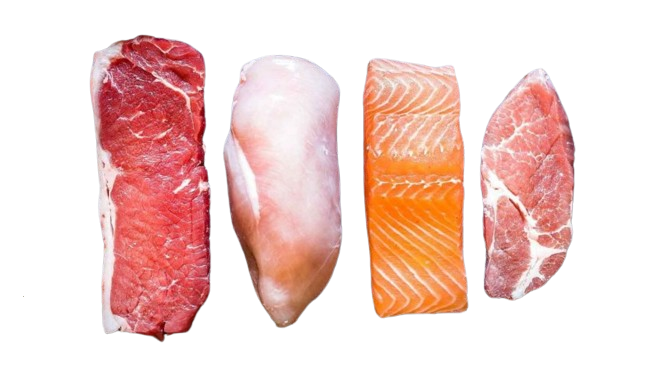

Nutrientes
Nutrientes são substâncias essenciais que o corpo humano necessita para funcionar corretamente, crescer, se reparar e manter a saúde.
Macronutrientes
Os macronutrientes são nutrientes essenciais que o corpo necessita em grandes quantidades para funcionar corretamente e manter a saúde.
- Carboidratos: constituem a principal fonte de energia para o nosso organismo e são as moléculas orgânicas mais abundantes da natureza.
- Proteínas: são moléculas orgânicas formadas por um conjunto de aminoácidos que desempenha uma série de funções importantes para o corpo humano, como a defesa do organismo, a aceleração de reações químicas, o transporte de substâncias, a movimentação, a comunicação celular e a sustentação
- Gorduras: são uma classe de macromoléculas que incluem as gorduras e substâncias semelhantes. Assim como os carboidratos, os lipídios estão relacionados com o fornecimento de energia.
Micronutrientes
Micronutrientes são nutrientes essenciais que o corpo necessita em pequenas quantidades para funcionar corretamente e manter a saúde.
- Vitaminas: são moléculas orgânicas extremamente importantes para nosso organismo, entretanto, são necessárias em pequenas quantidades. As vitaminas podem ser classificadas em hidrossolúveis e lipossolúveis.
- Minerais: são nutrientes inorgânicos necessários em pequenas quantidades no nosso organismo. Dentre os principais sais minerais necessários ao funcionamento do nosso organismo, podemos citar: cálcio, fósforo, potássio, cloro, sódio, ferro e flúor.
Alguns exemplos de nutrientes
Carboidrato

Proteínas